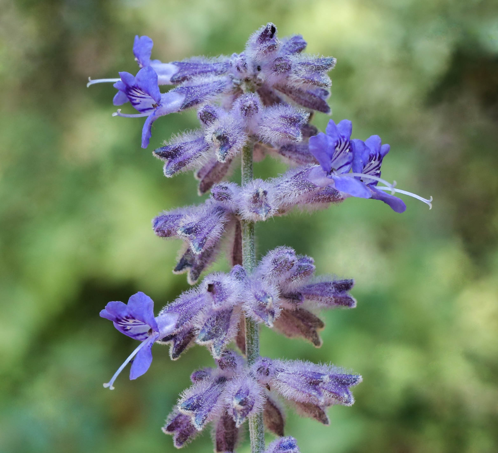

✅ Ziegensicher
☀️ Vollsonne · Küstenexposition
💧 Sehr trockenresistent
🌿 Lavendel-Optik
🌅 Sundowner-Terrasse
Standortprofil Area 4
Lage
Felsplateau · direkt am Meer
Exposition
West · Vollsonne ab Mittag
Besonderheit
Sundowner-Location · offene Meeraussicht
Herausforderung
Salzwind · Trockenheit · Ziegen
Boden
Kalkhaltiger Felsboden, drainiert
Wasser
Kein Bewässerungssystem nötig
Warum Perovskia an dieser Stelle?
-
Perfekt für die Sundowner-Atmosphäre
Die silbrig-lila Blütenähren leuchten im Abendlicht besonders intensiv. Wenn die Sonne über dem Meer untergeht, erzeugt Perovskia genau den romantischen, provenzalischen Effekt — ein natürliches Stimmungselement für die schönste Stunde des Tages.
-
Gemacht für exponierte Felspositionen
Perovskia ist ursprünglich in den Steppen Zentralasiens heimisch — er liebt karge, steinige, kalkhaltige Böden und volle Sonnenexposition. Je trockener und exponierter, desto besser. Genau das bietet Area 4 mit dem freistehenden Felsplateau.
-
Salzwindresistent · Küstentauglich
Die lederartigen, aromatischen Blätter und verholzten Stängel sind robust gegenüber Salz und Wind — eine Eigenschaft die viele mediterrane Zierpflanzen nicht mitbringen. Area 4 ist direkt dem Meereswind ausgesetzt; Perovskia hält das problemlos aus.
-
Null Bewässerung nach Eingewöhnung
Nach der ersten Saison kommt Perovskia komplett ohne Bewässerung aus. Tief verwurzelt, zieht er sich in der Sommerhitze zurück und treibt jedes Frühjahr neu aus — wartungsarm, systemunabhängig, ideal für eine Ferienimmobilie.
-
Lavendel-Optik ohne Lavendel-Probleme
Auf Distanz ist Perovskia von Lavendel nicht zu unterscheiden: silbrig-graues Laub, hohe lilafarbene Blütenähren. Der entscheidende Unterschied: Ziegen verschmähen ihn konsequent, während Lavendel auf Mallorca regelmäßig abgefressen wird.
🐐 Ziegensicherheit — warum Perovskia sicher ist
Perovskia enthält hochkonzentrierte ätherische Öle (vor allem Rosmarinöl-Komponenten und Campher), die Ziegen instinktiv meiden. Der intensive, durchdringende Geruch — besonders wenn die Pflanze durch Wind oder Berührung aktiviert wird — wirkt für Ziegen abstoßend. In Feldversuchen auf dem Mittelmeerraum wurde Perovskia selbst in Regionen mit hohem Ziegendruck kaum angefressen. Kein Zaunschutz notwendig.
Vergleich: Perovskia vs. Lavendel für Area 4
| Eigenschaft |
Perovskia |
Lavendel |
| Optik / Blütenähren |
✔ Sehr ähnlich, luftiger |
✔ Klassisch lila |
| Ziegensicher |
✔ Ja — ätherische Öle abschreckend |
✘ Nein — wird abgefressen |
| Salzwindresistenz |
✔ Sehr hoch |
⚠ Mittel |
| Trockenresistenz |
✔ Extrem — kein Wasser nötig |
⚠ Mittel — braucht gelegentlich Wasser |
| Felsboden / Kalk |
✔ Ideal |
⚠ Möglich, aber Humus hilfreich |
| Bewässerung nötig |
✔ Nein (nach Jahr 1) |
⚠ Gelegentlich |
| Blütezeit |
✔ Juni–Oktober (länger als Lavendel) |
Mai–August |